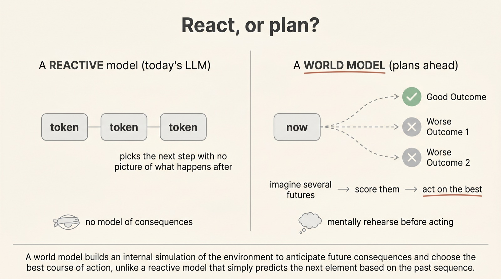
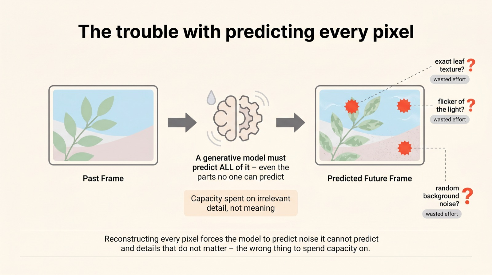
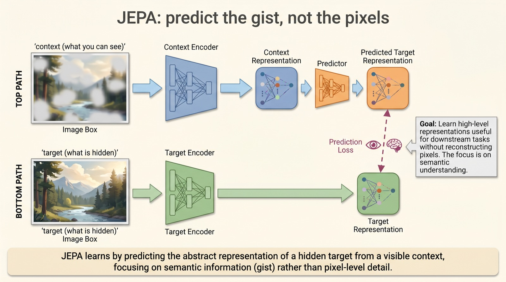
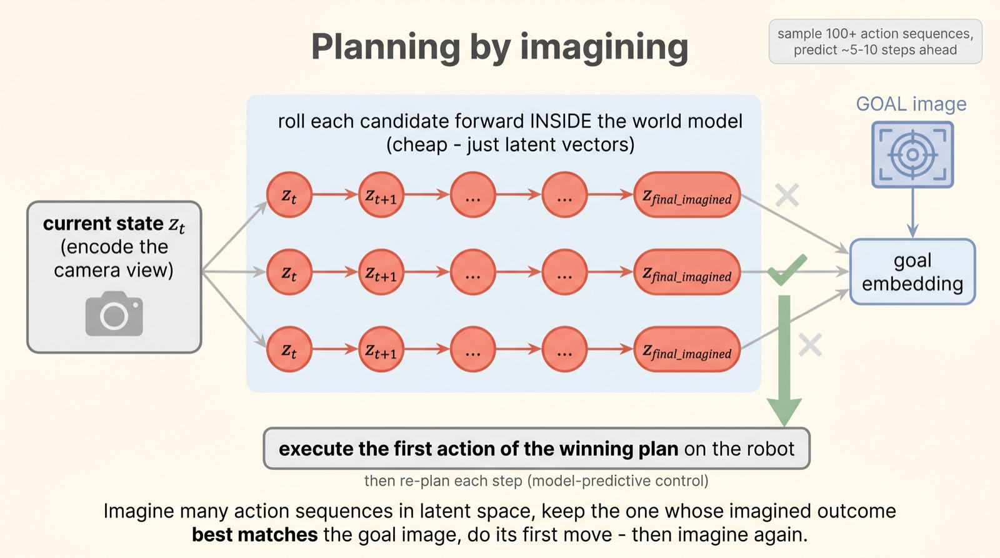
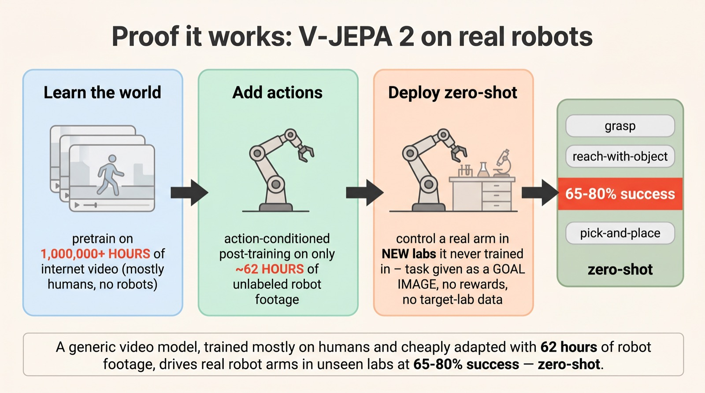
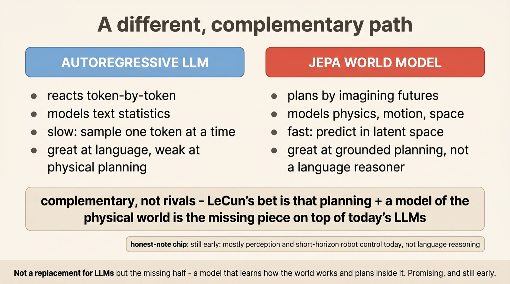

JEPA, V-JEPA 2, and learning to look before you leap
Planning by
imagining
A language model answers by reacting — one token after another, with no picture of where it's heading. A world model does what you do before a tricky move: it imagines a few possible futures, judges them, and acts on the best one. This is Yann LeCun's long bet for getting past today's LLMs — and with V-JEPA 2, it just started driving real robots.
The key idea, called JEPA, is to predict the future not as raw pixels but as abstract meaning — in latent space. That makes the prediction cheap, robust, and good enough to plan with. Meta's V-JEPA 2 (June 2025) learned from over a million hours of internet video, then controlled robot arms it had never seen, zero-shot. We'll build the idea from scratch.
Scroll to begin.
↓
React, or plan?
Watch how a language model works and you'll notice it never really looks ahead. It produces one token, then the next, then the next — each a locally sensible guess, with no internal picture of where the whole thing is going. It's astonishingly good at this. But it is, at its core, reacting.
Now think about how you cross a busy street, or reach for a mug at the edge of a table. You don't react blindly. You run a quick simulation in your head — if I step now, that car arrives; if I grab there, the mug tips — and you pick the action whose imagined outcome you like best. You plan by imagining. To do that, you need something a reactive model lacks: an internal model of how the world responds to what you do.

That internal model is a world model, and building a good one has been a quiet obsession of Yann LeCun's for years — his proposed path beyond the limits of pure language models. The whole challenge comes down to one deceptively hard question: how do you teach a machine to predict the future well enough to plan with it? The first instinct turns out to be a trap.
The trouble with predicting everything
The obvious way to build a world model is to have it predict the future literally — show it a video, hide the next frame, and train it to draw that frame back, pixel for pixel. This is the generative approach, and it sounds reasonable until you consider what it forces the model to do.
To reproduce the next frame exactly, the model has to predict everything — including all the things that are genuinely unpredictable. The precise flicker of a light. The exact texture of every leaf. The random shimmer of noise in the background. None of that matters for deciding what to do, yet the model burns enormous capacity trying to nail it, and gets punished for failing at the impossible.

This is the deep reason image- and video-generators, for all their beauty, have struggled as world models for planning. They're spending their effort on appearance, not consequence. JEPA's founding insight is to refuse this bargain entirely — to predict the future at a level where the unpredictable junk has already been thrown away.
Predict the gist, not the pixels
JEPA — the Joint Embedding Predictive Architecture — changes what the model predicts. Instead of predicting the future as pixels, it predicts the future as meaning: an abstract summary, an embedding, that captures the objects, the layout, the motion — and ignores the texture.
The machinery has three parts. A context encoder turns what the model can see into an embedding. A target encoder turns the hidden part (the thing to predict) into its own embedding. And a predictor tries to guess the target's embedding from the context's. Training just nudges the predicted embedding toward the real one — the comparison happens entirely in latent space, never in pixels.

There's one subtlety worth naming. If you're not careful, the model finds a cheap cheat: map everything to the same constant embedding and the prediction is always trivially "correct." This is called collapse, and JEPA blocks it with a clever asymmetry — the target encoder is a slow-moving copy that gets no gradient, plus a nudge to keep embeddings spread out. With that in place, the model is forced to predict real structure. And once it can predict structure, it can do something a generator never could cleanly: it can plan.
Planning by imagining
Here's where the world model earns its name. Add one ingredient — let the predictor take an action as input — and you can ask it a powerful question: if I did this, what would the world look like next? Crucially, the answer comes back as a latent state, not a picture, so you can ask it over and over, cheaply.
Planning then becomes a search through imagined futures. From where you are now, you sample a hundred-odd candidate action sequences. You roll each one forward inside the world model — five, ten steps ahead, all in latent space. You score each imagined ending against your goal (handed to the model as a goal image). You take the first move of whichever plan came closest — then, a step later, you imagine again. Engineers call this model-predictive control; you can just call it thinking ahead.

Proof: V-JEPA 2 on real robots
For a long time this was a beautiful theory in search of a result. Then, in 2025, Meta's V-JEPA 2 made it concrete — and the way it did so is the most striking part of the story.
First it learned how the world moves by watching over a million hours of ordinary internet video — mostly people doing things, almost no robots. Then, to let it plan actions, the team added action-conditioning using just about 62 hours of unlabeled robot footage. That's it. No data from the labs it would be tested in, no task-specific rewards.
Dropped onto a robot arm in a lab it had never encountered, and handed a task simply as a goal image, V-JEPA 2 planned and executed real manipulations — reaching, grasping, pick-and-place — at 65–80% success, entirely zero-shot. A generic video model, trained mostly on humans, cheaply taught to act, and then trusted to control real hardware in an unfamiliar room. That's the headline that made people pay attention.

A different path to intelligence
It's tempting to frame this as world models versus language models, but that misreads it. They're built for different jobs, and the honest view is that they're complementary.
An LLM is a reactive virtuoso of language — it models the statistics of text and is unmatched at it. A JEPA world model is the opposite kind of thing: it models physics, motion and space, it predicts in fast latent space rather than token by token, and it can plan — but it is no language reasoner. LeCun's bet isn't that one replaces the other; it's that a model of the physical world, and the ability to plan inside it, is the missing half sitting on top of what LLMs already do well.

Why this matters
Keep two things in mind, and be honest about both. The first: this is still early. V-JEPA 2 plans short-horizon physical tasks, not long chains of abstract reasoning; it's a striking proof of concept, not a finished mind. Anyone telling you world models have already eclipsed LLMs is getting ahead of the evidence.
The second, though, is why the idea is worth your attention. Almost everything intelligent does two things — it understands the world, and it acts in it by anticipating consequences. Today's AI is brilliant at the first half through language and shaky at the second. World models are the most serious attempt to build that second half: to predict, cheaply and abstractly, what happens next, and to choose accordingly.
The shift to carry away is small but deep. For a few years we equated "smarter AI" with "better at predicting the next word." A world model quietly insists the more important question is the older one every animal answers all day long: not what comes next, but what would happen if I did this.